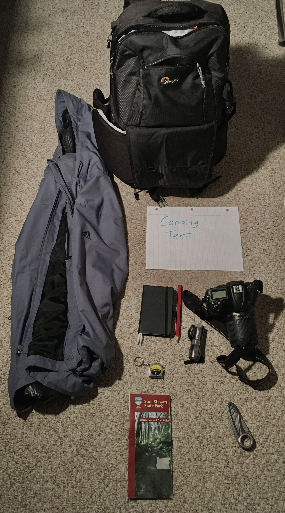
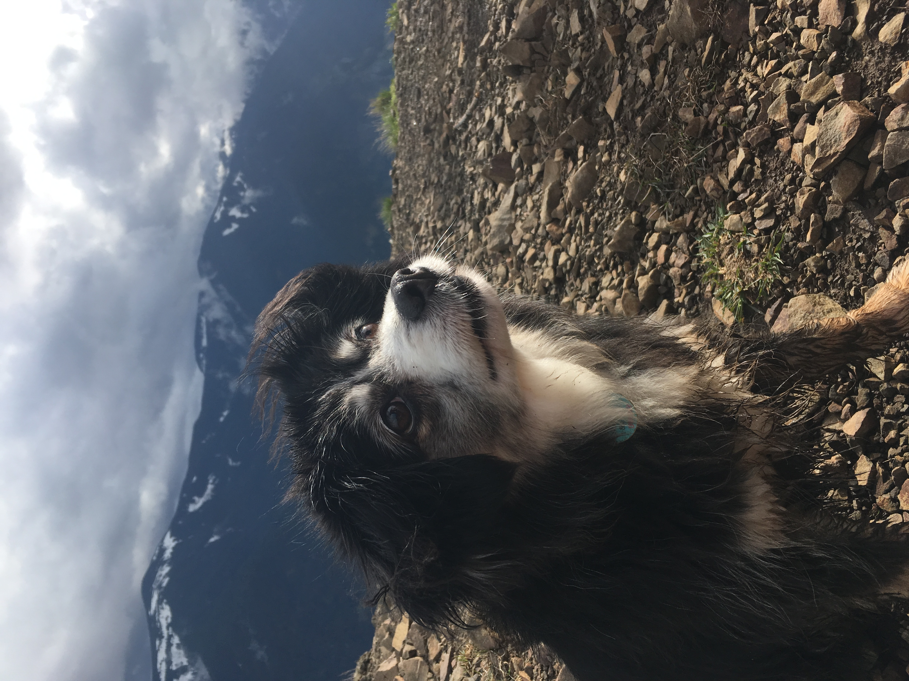

Animal Skills page
Animal Skills relates to the study and handling of animals. Mastery of this outcome is shown with media, objects and characteristics such as safety kits, field kits, animal observation, handling of animals, maintaining wildlife,animals and habitats along with many more examples. Provided below are examples that were created or shown throughout the course of Bio 102.
Mastery #1: Field kit
The first media is a field kit, which demonstrates mastery of animal skills since it shows I'm prepared for studying animals in the outdoors safely. Mastery of animal skill is also demonstrated from working with my dog.

